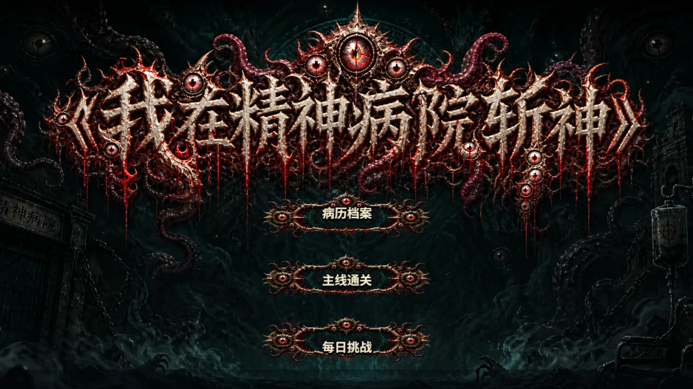
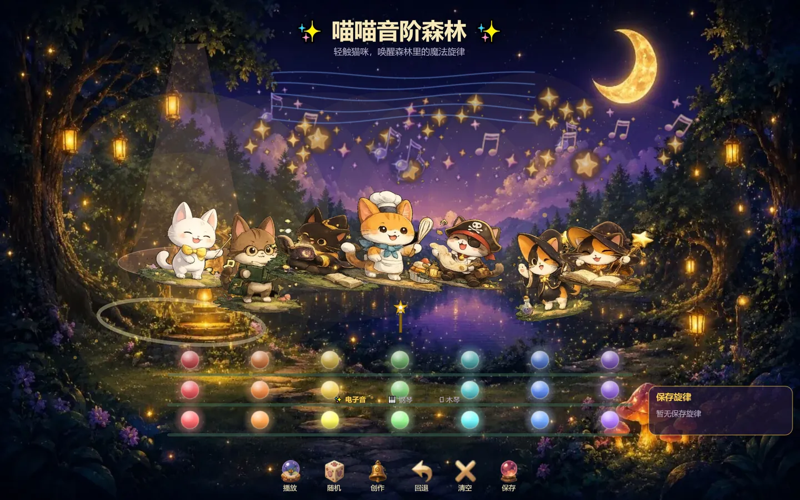
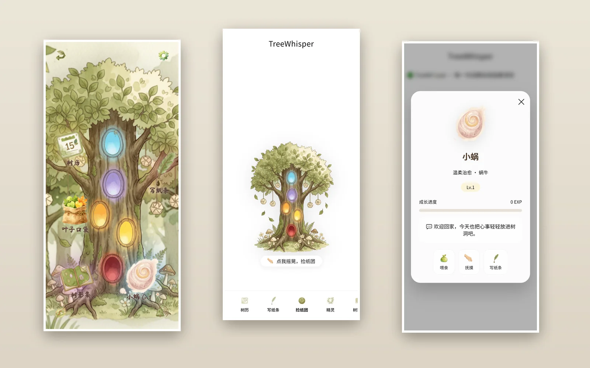
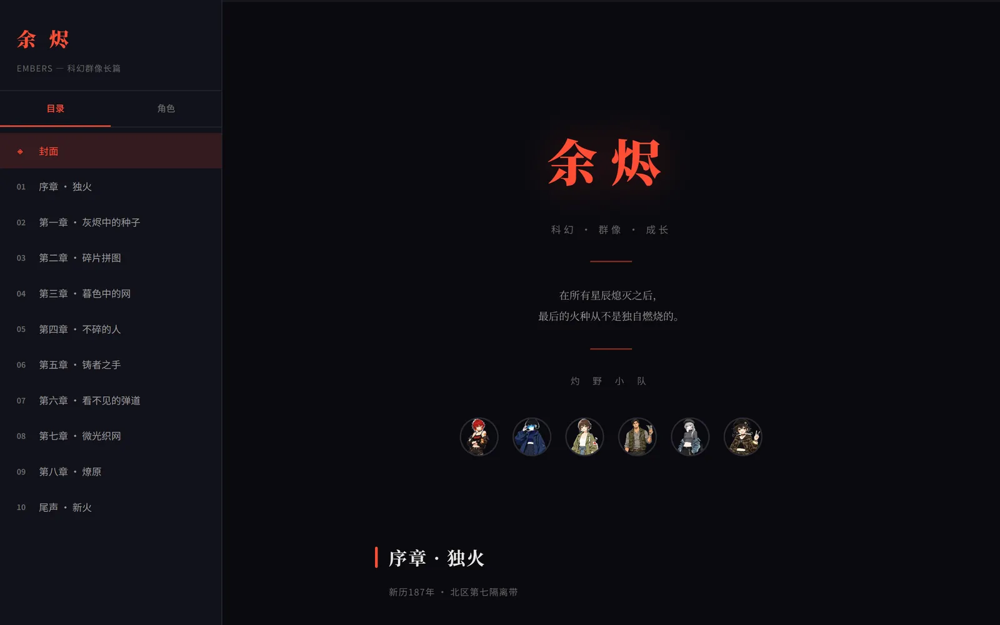

01
我在精神病院斩神 Game
克苏鲁式像素 Roguelike，横屏自动战斗。你是「患者 0001」，要一路砍穿 30 层病区—— 打得越久，SAN 值掉得越快，掉到 30 就会强制异化：更强，也更脆。
看这个项目
我是卢璐，产品经理。这四件作品都是我一个人从定义做到上线：需求是我拆的，界面是我定的， 代码是我和 AI 一起写的。它们不是设计稿，现在就能打开用。
克苏鲁式像素 Roguelike，横屏自动战斗。你是「患者 0001」，要一路砍穿 30 层病区—— 打得越久，SAN 值掉得越快，掉到 30 就会强制异化：更强，也更脆。
看这个项目



三年多产品经验，做过百万 DAU 社区、AI 模板从 0 到 1、剧本杀三端重构。
我的习惯是：先把问题写成一句话，再决定要不要做。做的时候先想清楚这一屏放什么、 为什么放、什么时候拿掉——剩下的交给实现。
这些作品是我在业余时间用 AI 写代码做出来的。我不写框架，但我决定每一屏的分工、 每一个数值的取舍，也自己验收每一次改动。产品经理的基本功，是不把「想做」当成「做完」。
白天在游戏与社区行业做需求、做后台、做 AI 内容供给；晚上做这些能点开的小东西。 两边用的是同一套方法。